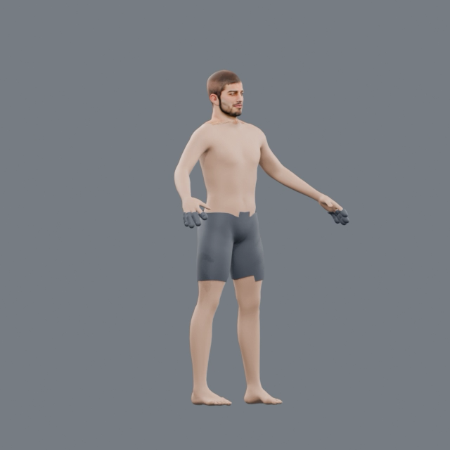
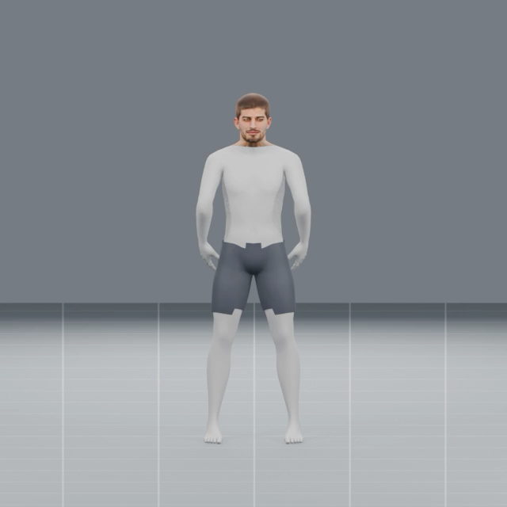
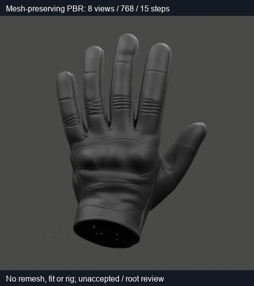
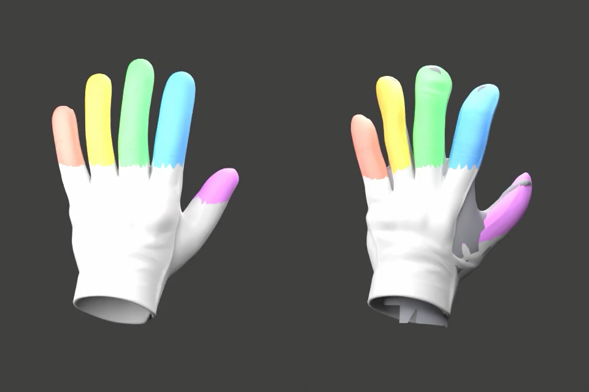
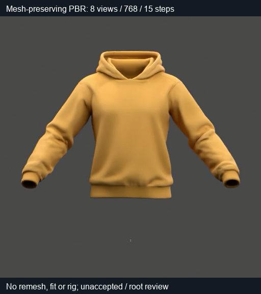
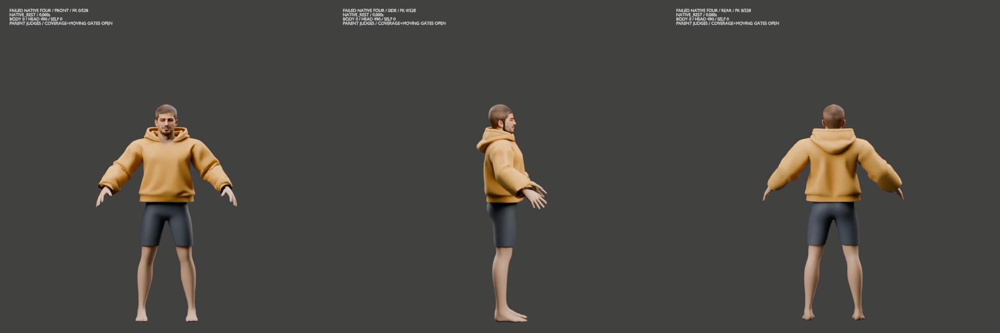

Before & after
Latest available visual record · October 7, 2026
Body construction
Earlier and later candidates. Pose and camera differ; both remain unaccepted.




Glove fit
Original dark glove appearance source and the later source-versus-fit diagnostic. Colored fingers are diagnostic labels.




Hoodie deformation
Appearance donor and failed native skinning trial. This comparison shows the source-to-wearable gap.




All 21 visual sequences
Four unedited playback photos per sequence. Open a photo for its full size. The complete videos and all 1,354 playback photos are supplied separately in chat.
01 · Mustard hoodie appearance source
Historical source/control, October3–5 · source or unaccepted trial


02 · Jeans appearance source
Historical source/control, October3–5 · source or unaccepted trial


03 · Black glove appearance source
Historical source/control, October3–5 · source or unaccepted trial


04 · Boot appearance source
Historical source/control, October3–5 · source or unaccepted trial


05 · Hoodie26 failed native skin
Historical source/control, October3–5 · source or unaccepted trial


06 · Neck27 failed matched repair
Historical source/control, October3–5 · source or unaccepted trial


07 · Exposed body: native FULL/FOUR
Historical source/control, October3–5 · source or unaccepted trial


08 · Exposed body: earlier47 control
Historical source/control, October3–5 · source or unaccepted trial


09 · Whole-rider slow presentation
Historical source/control, October3–5 · source or unaccepted trial


10 · Held-out construction comparison
Historical source/control, October3–5 · source or unaccepted trial


11 · Sleeve26 deformation control
Historical source/control, October3–5 · source or unaccepted trial


12 · Glove01 failed finger flex
Historical source/control, October3–5 · source or unaccepted trial


13 · Glove source branch classification
Historical source/control, October3–5 · source or unaccepted trial


14 · Glove cuff PBR context
Historical source/control, October3–5 · source or unaccepted trial


15 · Glove02 source versus fitted
Historical source/control, October3–5 · source or unaccepted trial


16 · Glove anatomical finger branches
Historical source/control, October3–5 · source or unaccepted trial


17 · Body05 later grounded motion
Historical source/control, October3–5 · source or unaccepted trial


18 · Body02 earlier profile gray
Historical source/control, October3–5 · source or unaccepted trial


19 · Body02 earlier front PBR
Historical source/control, October3–5 · source or unaccepted trial


20 · Body02 earlier rear PBR
Historical source/control, October3–5 · source or unaccepted trial